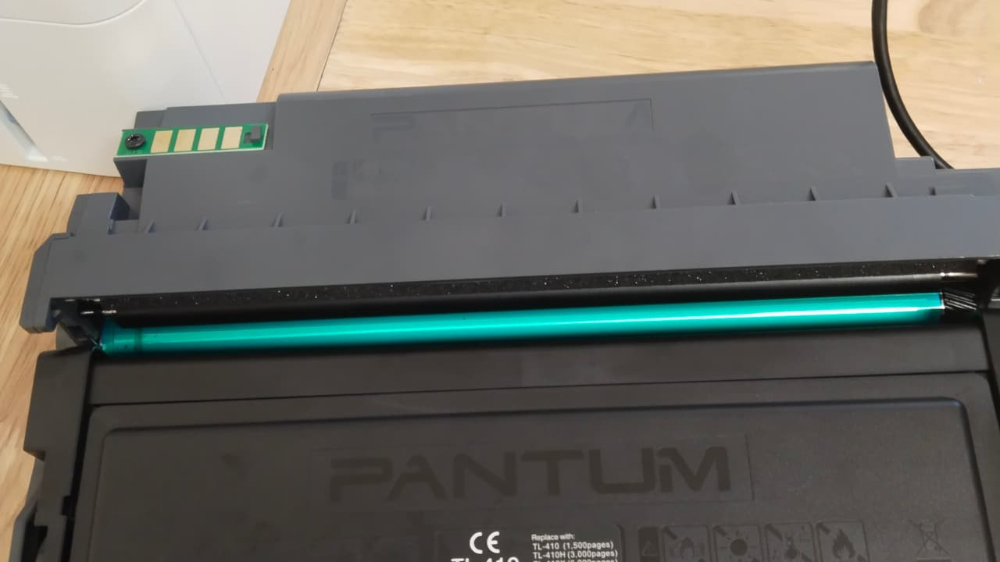
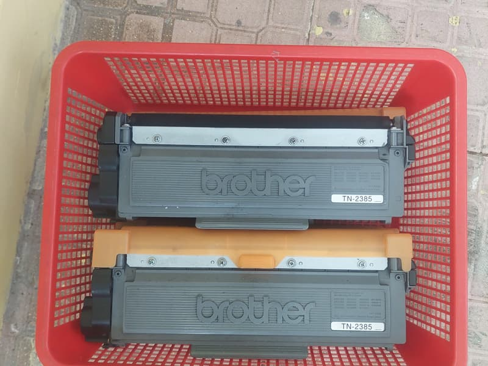
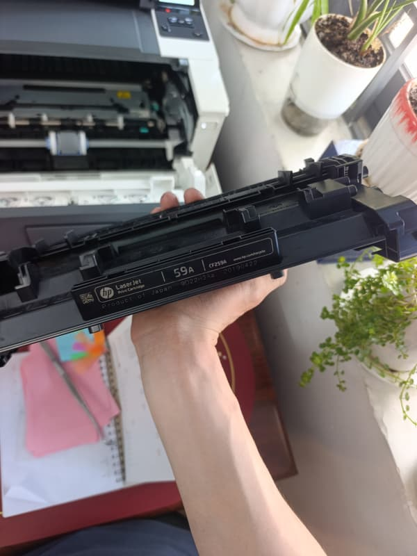

Máy in báo hết mực: có khi là hết thật, có khi chỉ là bộ đếm
Nhiều máy không đo lượng mực thật mà đếm số trang đã in. Vì vậy máy có thể báo hết trong khi bản in còn đậm, hoặc tiếp tục báo dù hộp vừa được nạp đầy.
Máy của anh/chị đang báo gì?
Hệ thống 9 địa chỉ: Quận 8, Quận 10, Quận 11, Phú Nhuận, Bình Thạnh, Bình Chánh, Thủ Đức, Bình Dương.
Tìm hình giống tờ giấy của anh/chị, mũi tên đỏ chỉ đúng chỗ lỗi. Hình là minh hoạ, bấm vào hình để xem nguyên nhân.
- 1 Toner Low
- 2 Replace Toner
- 3 Đã nhạt thật
- 4 Nạp xong vẫn báo (Brother)
- 5 Nạp xong vẫn báo (có chip)
- Toner Low, bản in còn đậm. Nguyên nhân: Mực sắp hết, chưa phải hết. Nên làm: Cứ in tiếp, chuẩn bị nạp trong thời gian tới.
- Replace Toner, máy dừng in, bản in còn đậm. Nguyên nhân: Bộ đếm của máy đã tới ngưỡng. Nên làm: Cần nạp mực và đặt lại cữ trên hộp.
- Báo hết và bản in đã nhạt. Nguyên nhân: Hết mực thật. Nên làm: Lắc hộp để in tạm, sau đó nạp.
- Vừa nạp xong vẫn báo hết (Brother). Nguyên nhân: Hộp chưa được đặt lại cữ. Nên làm: Cần đặt lại cữ trên hộp mực.
- Vừa nạp xong vẫn báo hết (HP đời mới, Samsung, Fuji Xerox). Nguyên nhân: Chip trên hộp đã hết lượt đếm. Nên làm: Cần thay chip hộp mực.
Kiểm tra trong 3 bước
- Đọc chính xác dòng báo trên màn hình hoặc trên máy tính. "Toner Low" là sắp hết và máy vẫn in được. "Replace Toner" hoặc "Toner End" là máy sẽ dừng.
- In một trang chữ và nhìn độ đậm. Bản in còn đậm mà máy vẫn báo hết thì vấn đề nằm ở bộ đếm, không phải ở lượng mực.
- Tắt máy, lấy hộp ra lắc ngang nhẹ rồi lắp lại cho chắc. Hộp lắp lỏng cũng có thể làm máy báo sai.
Khác nhau theo từng hãng
- Brother: hộp mực có cữ riêng, sau khi nạp cần đặt lại cữ thì máy mới nhận là hộp đầy.
- HP đời mới (107a, 135w, 137fnw, hộp W1106A): hộp có chip. Tùy máy có khóa hay không mà cần cộng thêm chip khi nạp.
- Canon LBP2900 và các dòng tương tự: thường không có chip hộp mực, bản in nhạt dần là dấu hiệu chính cần theo dõi.
- Samsung, Fuji Xerox: gần như luôn phải thay chip sau khi nạp.


Trước khi mua hộp mới
Hãy nhìn tem dưới đáy hoặc trên thân hộp để lấy đúng mã hộp mực. Máy cùng hãng nhưng khác đời có thể dùng hộp khác nhau, và giá nạp cũng tính theo mã hộp này. Nhắn mã hộp qua Zalo để cửa hàng báo giá.

Thử rồi vẫn chưa được?
Gọi hoặc gửi ảnh bản in qua Zalo, cửa hàng sẽ nói anh/chị biết nên làm gì tiếp theo và báo giá trước. Văn phòng, cửa hàng ở nội thành TP.HCM có nhiều máy thì nhắn danh sách dòng máy để cửa hàng sắp xếp một lượt. Có xuất hoá đơn VAT, bảo hành tính theo số trang in.
Gọi 0986 704 260 Gửi ảnh qua Zalo
Giá tham khảo
| Hạng mục | Giá |
|---|---|
| Brother — TN-1000, 2130, 2260, 2365, 2385 | 120.000đ |
| HP 107a / 135w / 137fnw (hộp W1106A, có chip) | 100.000 – 150.000đ |
| Canon — EP-26, 303, 325, 326, 329, 051 | 80.000 – 100.000đ |
| Samsung — MLT-D101S, D104S, D111S, D203 | 120.000đ |
| Chip hộp mực | 80.000 – 150.000đ |
Giá chốt sau khi xem máy, anh/chị đồng ý thì mới làm.
Hệ thống 9 địa chỉ, chọn nơi gần anh/chị
- Quận 8 5/19 Phạm Hùng, Chánh Hưng
- Quận 10 77 Cửu Long, Hòa Hưng
- Quận 10 79 Bắc Hải
- Quận 11 64 Bình Thới
- Phú Nhuận 240 Nguyễn Trọng Tuyển
- Bình Thạnh 1/2/26 Võ Oanh
- Bình Chánh 203 Thế Lữ, Tân Nhựt
- Thủ Đức 75 đường số 4, KDC Tam Bình
- Bình Dương 3 Lái Thiêu 1
Gọi hoặc nhắn Zalo 0986 704 260 cho mọi địa chỉ. Bấm vào địa chỉ để mở chỉ đường.
Câu hỏi thường gặp
Có nên tiếp tục in khi máy báo Toner Low không?
Được, miễn là bản in còn đậm. Nên chuẩn bị nạp sớm để máy không dừng đúng lúc đang cần in.
Nạp mực có làm hỏng máy không?
Nạp đúng loại mực theo mã hộp và vệ sinh buồng mực thì không ảnh hưởng tới máy. Rủi ro thường đến từ mực sai loại hoặc hộp đã nạp quá nhiều lần.